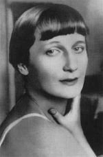

Литература серебряного века
Анна Ахматова родилась в 1889 году под Одессой в семье потомственного дворянина, отставного инженера-механика флота Андрея Горенко.
Отец боялся, что поэтические увлечения дочери опозорят его фамилию, поэтому еще в юном возрасте будущая поэтесса взяла себе творческий псевдоним — Ахматова.
В 1912 году вышел первый сборник стихотворений Ахматовой «Вечер» — литературная петербургская публика восприняла его с большим интересом.
Перед началом Первой мировой войны Ахматова опубликовала второй сборник стихотворений — «Четки».
В апреле 1921 года вышел сборник стихов «Подорожник», а в октябре — книга «Anno Domini MCMXXI»
В 1962 году поэтесса завершила работу над «Поэмой без героя», которую писала в течение 22 лет.
В 1960-е годы творчество Ахматовой получило широкое признание — поэтесса стала номинантом на Нобелевскую премию, получила литературную премию «Этна-Таормина» в Италии. Оксфордский университет присвоил Ахматовой степень почетного доктора литературы.